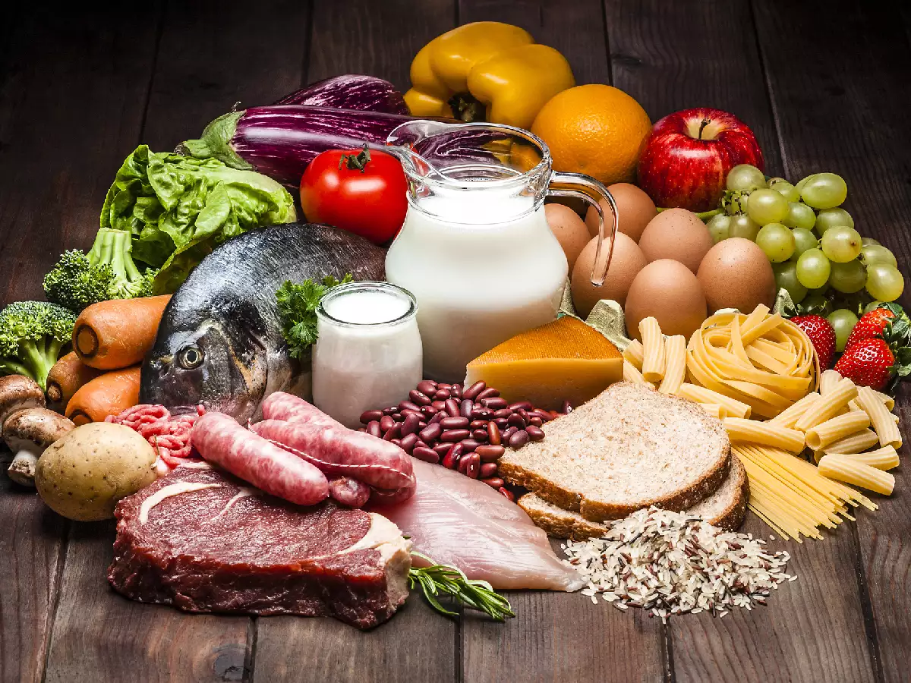
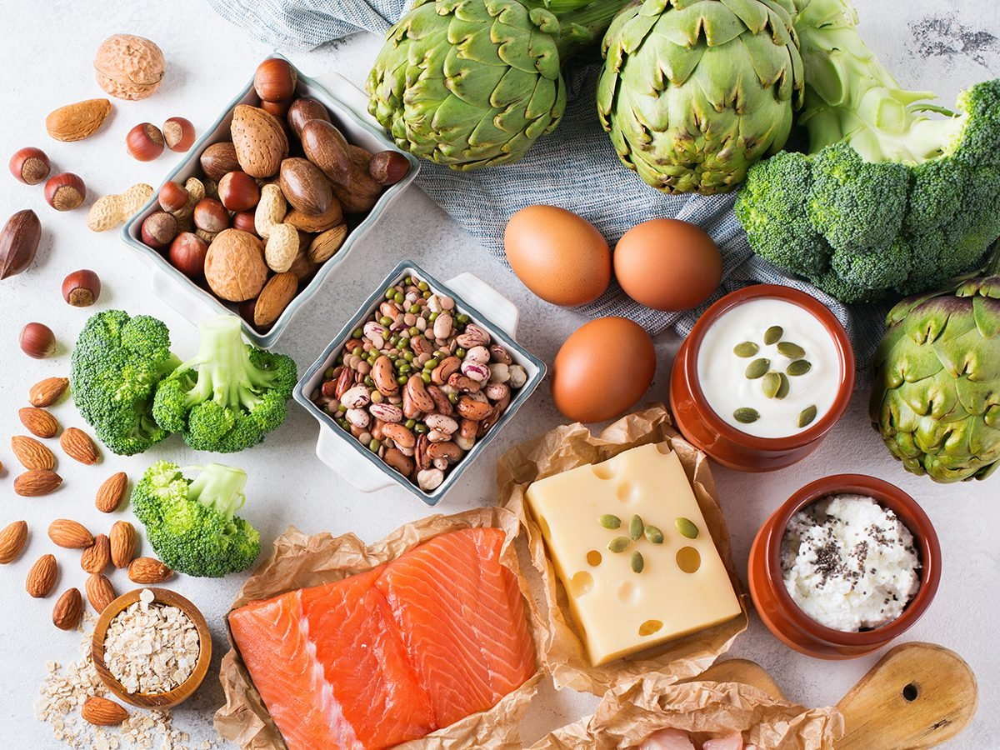
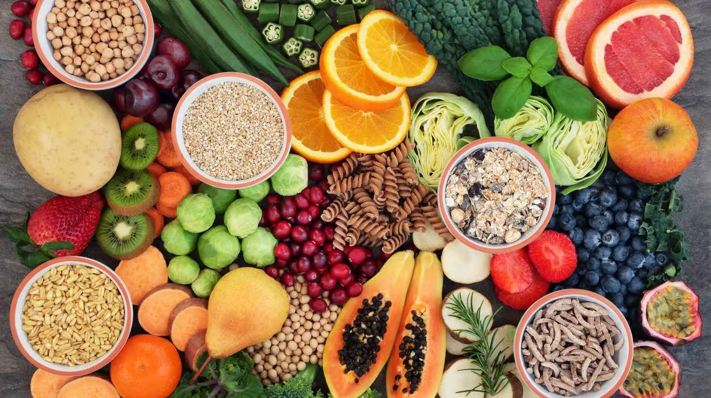
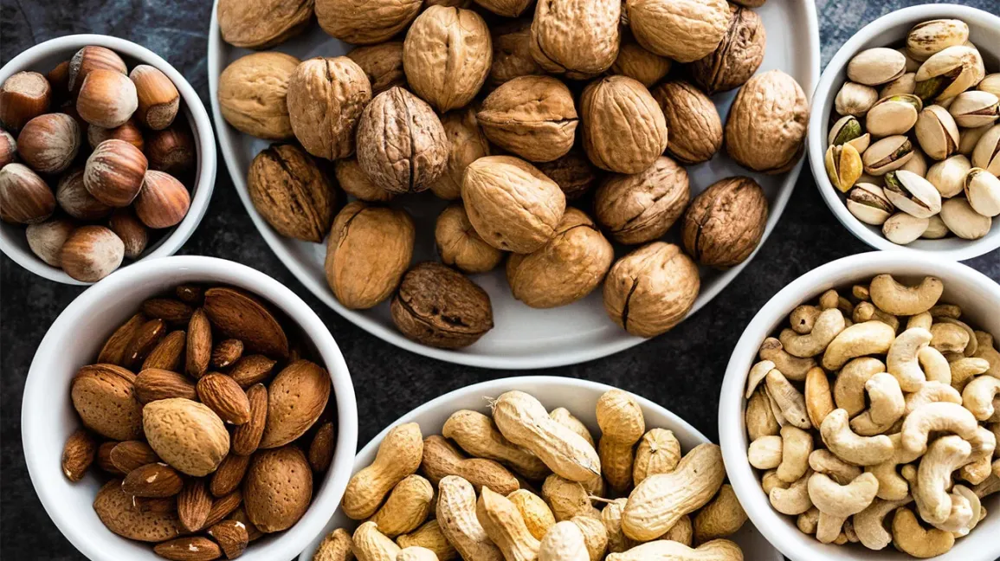

Nutrition plays a critical role in maintaining good health and
preventing chronic diseases. A balanced diet that is rich in
nutrients, vitamins, and minerals is essential for optimal health
and well-being. Eating a variety of foods from all food groups is
important to get the nutrients your body needs to function properly.
Nutrients are classified as Macronutrients and
Micronutrients.
Macronutrients:
Macronutrients are the nutrients that the body requires in larger
quantities. These include carbohydrates, proteins, and fats.
Carbohydrates are the body's main source of energy, while proteins
are important for building and repairing tissues. Fats are
important for energy and cell growth, but too much fat in the diet
can lead to health problems.
Carbohydrates

Carbohydrates provide energy for the body and are found in foods
like bread, pasta, rice, and fruits. Carbohydrates are divided
into two main types: simple and complex. Simple carbohydrates,
also known as sugars, are found in foods like candy, soda, and
baked goods. Complex carbohydrates, on the other hand, are found
in foods like whole grains, fruits, and vegetables.
Fats

Fats are important for maintaining cell function and hormone
production. They are found in foods like nuts, seeds, and
oils.When it comes to fat intake, it's important to aim for a
balance of different types of fats in your diet. Experts
recommend that adults get between 20-35% of their daily calories
from fats, with most of that coming from unsaturated fats.
Protein

Protein is made up of amino acids, which are the building blocks
of our muscles, organs, and tissues. Protein also helps to
repair and maintain these tissues, as well as supporting the
immune system and producing hormones and enzymes. It is found in
animal products like meat, fish, and eggs, as well as
plant-based sources like beans, lentils, and tofu.
Micronutrients:
Micronutrients are another important category of nutrients
that the body needs in smaller amounts than macronutrients.
Micronutrients include vitamins and minerals, and they play
important roles in many bodily functions such as immune system
function, metabolism, and maintaining healthy bones, skin, and
eyes.
Vitamins

Vitamins are essential organic compounds that the body
needs to function properly. They are found in many foods,
such as fruits, vegetables, and whole grains. There are 13 essential
vitamins — vitamins A, C, D, E, K, and the B vitamins
(thiamine, riboflavin, niacin, pantothenic acid, biotin, B6,
B12, and folate).
Minerals

Minerals are essential inorganic compounds that the
body needs for proper function. They are found in many
foods, such as dairy products, meats, and nuts. They include calcium,
phosphorus, magnesium, sodium, potassium, chloride and sulphur.